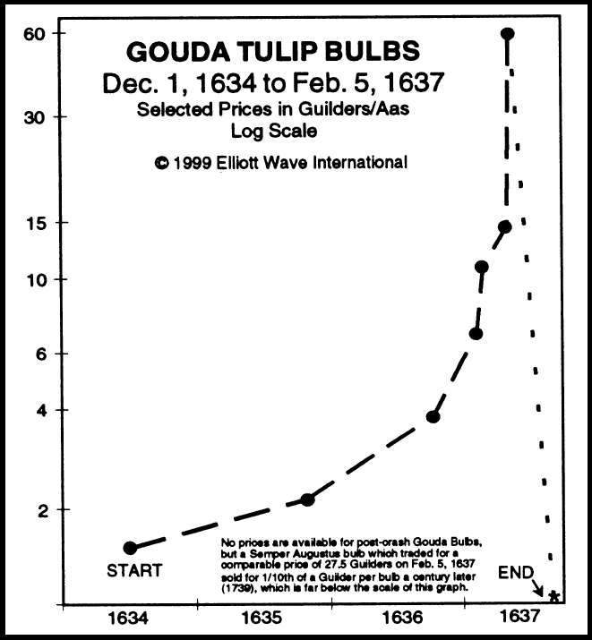

Jack Griffin is a Contrarian thinker from Sweden. He currently resides in countries that have better weather than Sweden.


2017 was the year when cryptocurrencies became mainstream. Bitcoin lead the race and went from trading for under $1,000 in January 2017 to an all-time high of over $20,000 in December 2017. Now everybody seems to be talking about Bitcoin, with mainstream media running nonstop sensational stories on the subject. It is obvious to me that they don’t have an idea what they are talking about. To get relevant information about cryptocurrencies, you simply can’t rely on sources like CNN or CNBC.
In this article, I will give you some basic information that will point you in the right direction. I discuss this from an investment perspective and will not go into the technical aspects. If you want to learn about blockchain technology (and you should), there are many sources available online.
Here are a few things you need to know before investing in cryptocurrencies…

Can Bitcoin go up to $1 million? Will Bitcoin crash down to $500? These common questions are impossible to answer. Instead, let’s have a look at some facts.
Bitcoin is not a tulip. The tulip bulb bubble is one of the most well-known market bubbles of all times. It occurred in Holland during the early 1600s. Speculation drove prices on tulip bulbs to astronomical levels. Quite often, you hear comparisons between Bitcoin and the Tulip Bulb Bubble in the media. This is not a relevant comparison, because while there was an unlimited supply of tulips, the supply of Bitcoin will always be limited to 21 million coins.
If Bitcoin goes down, it will probably happen because something better comes along. What will happen if the Swiss government decides to launch a SwissCoin, for instance? It could be backed by gold and anonymity would be 100 percent guaranteed (Switzerland values personal integrity). My guess is that the smart money quickly would move from Bitcoin to a currency like that.
It is only a matter of time before a state introduces a cryptocurrency. In Russia, President Vladimir Putin has already expressed interest in a crypto ruble. I wonder what will happen with the economic sanctions against Russia when this new crypto is introduced.

Currently, there are over 1,300 cryptocurrencies available over the Internet. More and more are being introduced through ICOs (Initial Coin Offering). If you want to participate in an ICO, you must be able to screen out interesting candidates that you can take a deeper look at. You do this by answering two questions.
1. Is there a limited supply of this coin? There will never be more than 21 million Bitcoins. That’s an example of limited supply. But there are also coins that have no limited supply. The coin rate can be inflated forever. Don’t even think about investing in such a currency.
2. Is there an unlimited demand for this coin? Does the coin solve a big enough problem that a lot of people have? If it does, then demand for it could become limitless.
Understand that none of these currencies are stocks from a legal point of view. They may look like stocks for the inexperienced investor, but that’s an illusion. This market is completely unregulated. You don’t own a share of a company. There are no annual reports. Scam artists and organized crime are definitely moving in.
I’m certain that 95 to 99 percent of today’s cryptocurrencies will fail within a few years from now. But cryptocurrency is still the future! This sounds like a contradiction, but it is true.
The current market situation is similar to the dotcom bubble during the late 90s and early oughts. Many companies that called themselves Internet companies were nothing more than glorified mail order firms. In some cases, they weren’t even that. They managed to attract billions of dollars in venture capital funding, but eventually the crash came and most of them disappeared.
But even if most of those companies were part of a bubble, the Internet itself was not a bubble. And a company like Amazon was certainly not a scam.
Cryptocurrencies are the Internet of money. The Amazon of cryptocurrencies might be out there right now and trading for around eleven cents. If you find it, you can get very wealthy. But you have to do your homework first. Investing takes time and dedication.

The crowd is lazy and ignorant. Instead of reading books about investing, they prefer “stock tips.” And now, they are all running after Bitcoin. I recently saw an online ad for some Bitcoin trading service and it said something like “Buy Bitcoin now before it crashes!” What a brilliant idea! “Book a ticket to the Titanic before it sinks.”
The takeaway here is that you need to educate yourself before you make any kind of investment. But you also need to be very selective with the sources you seek out for your education. Investigate who is behind the information you receive. Think for yourself and think critically. Don’t buy into some bogus scheme that advises you to day trade Bitcoin.
Warren Buffett says that you should be “greedy when others are fearful and fearful when others are greedy.” This is something that holds true in any market. No government can ever legislate against market bubbles and the crashes that always follow them. Because those events are driven by human nature, there is no way to outlaw them.
In order to make money from cryptocurrencies—or any other financial market in the long term—you’ve got to develop a contrarian mindset. You must be able to go against the crowd without losing sleep over it. The psychological aspects of investing are always the hardest to master.
Read More: How To Make Money Trading Cryptocurrency